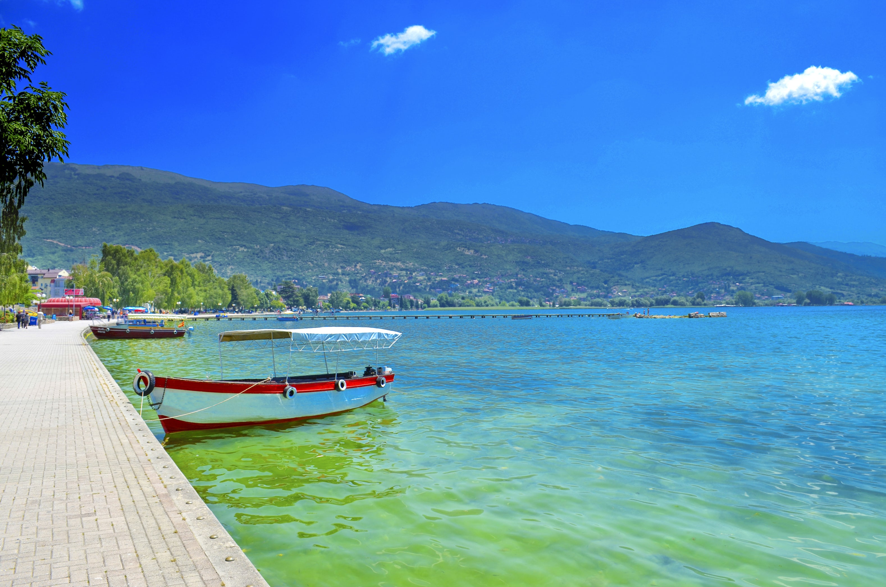
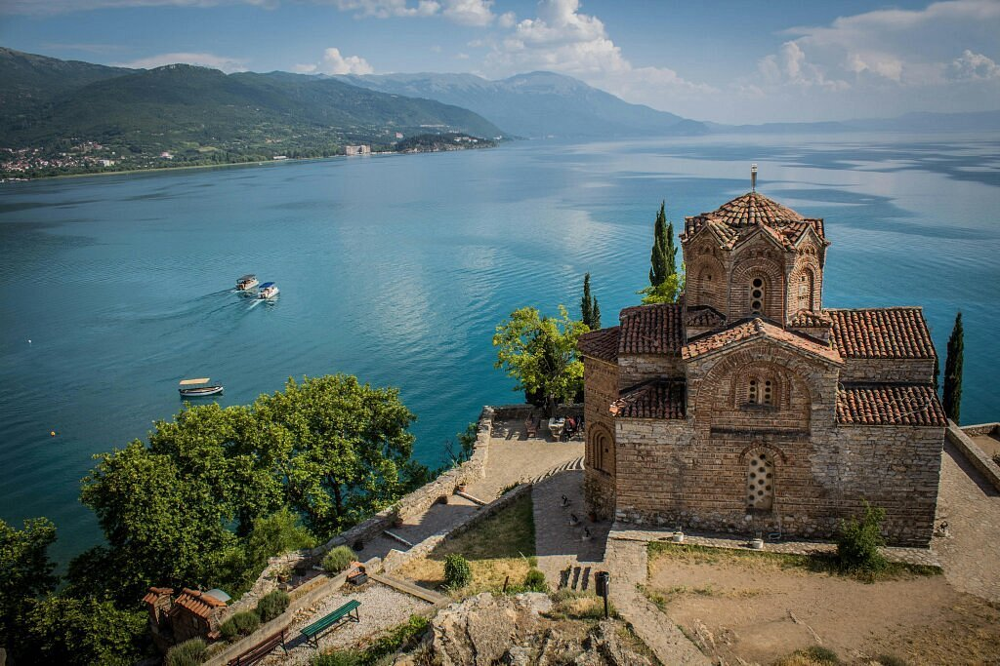
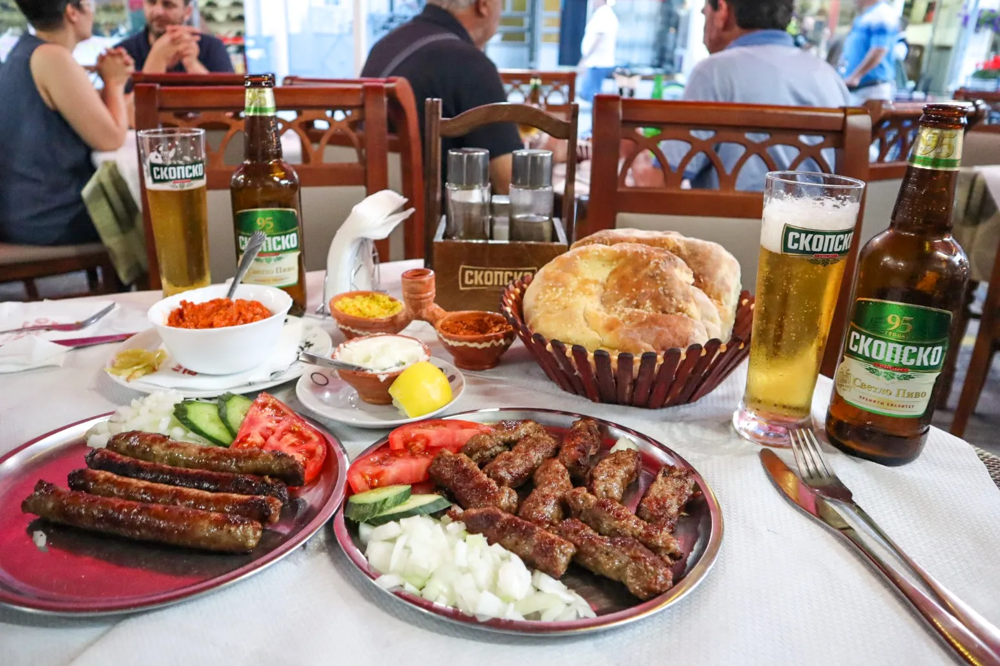

Top 3 activities to do in Ohrid

Swim in Ohrid lake
Ohrid lake is perfect for swimming and relaxing.

Visit our 365 churches
Ohrid is abundant with churches. For each day of the year we have a church. Perfect for exploration and sightseeing of ancient ruins.

Taste great food
Ohrid is great for people who love great food. From BBQs to stews there are great options for everyone's taste.